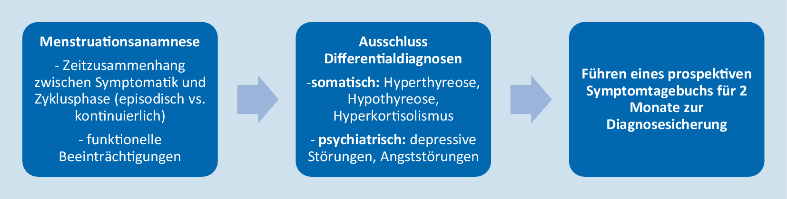

Página 5 · Síndrome pré-menstrual e síndrome disfórica pré-menstrual
Mesmos sintomas, dois diagnósticos: o que realmente separa
Síndrome pré-menstrual
Irritabilidade, mama doendo, corpo inchado, cabeça pesada.
Síndrome disfórica pré-menstrual
Irritabilidade, mama doendo, corpo inchado, cabeça pesada.
Essa lista serve às duas síndromes — inteira, sem tirar nem pôr. Se a lista de sintomas não separa uma da outra, o que separa?
O divisor primário: não é o quê, é quanto
As duas formas compartilham a constelação de sintomas — e é por isso que a lista, sozinha, não classifica ninguém. O que separa é o grau de interferência na qualidade de vida: de um lado, quadro leve a moderado, com menor interferência; do outro, quadro grave e incapacitante, com interferência muito importante. Os sintomas se repetem entre as duas; a intensidade e o estrago é que não. Note uma sutileza que evita erro: prejuízo funcional existe nas duas — o critério da forma leve a moderada já exige disfunção identificável no desempenho social ou econômico. A diferença não é ter prejuízo; é quanto.
Os quatro domínios onde a interferência se mede
O "quanto" não é impressão: ele se mede em quatro frentes nomeadas — funcionamento diário, relações pessoais, relações profissionais e qualidade de vida. Na forma grave, os quatro são atingidos de forma muito importante; na forma leve a moderada, a repercussão existe mas não desorganiza a vida. Quando um enunciado descreve faltas ao trabalho, brigas recorrentes e incapacidade de tocar a rotina por uma a duas semanas de cada mês, ele está descrevendo os quatro domínios sendo atravessados — é a assinatura textual da forma disfórica.
Os outros dois divisores: a janela e o critério
O segundo divisor é temporal: 7 a 10 dias antes do fluxo na síndrome pré-menstrual × em torno de 14 dias na disfórica (com a ressalva já instalada: o critério desta última conta a semana final). As duas cessam a partir do 1º dia do ciclo — essa linha é comum e não discrimina. O terceiro divisor é criterial: de um lado, 1 afetivo + 1 somático, em avaliação retrospectiva de 3 ciclos consecutivos, ao menos nos 5 dias que antecedem; do outro, ≥1 sintoma major com total de 5 sintomas, história na maioria dos ciclos do último ano, diário prospectivo de ≥2 ciclos, melhora documentada após o início da menstruação e exclusão de distúrbio psiquiátrico. Três eixos, portanto: gravidade, janela e critério — e é só com eles que se classifica.
| Eixo | Síndrome pré-menstrual | Síndrome disfórica pré-menstrual |
|---|---|---|
| Gravidade / interferência | leve a moderada; menor interferência (com prejuízo funcional identificável) | grave e incapacitante; interferência muito importante nas relações interpessoais e profissionais |
| Janela | 7 a 10 dias antes do fluxo (o critério conta os 5 dias que antecedem) | ~14 dias antes do fluxo (fase lútea); o critério conta a semana final |
| Critério | 1 afetivo + 1 somático; retrospectivo; 3 ciclos consecutivos; ≥5 dias que antecedem | ≥1 major; total de 5; história na maioria dos ciclos do último ano; diário prospectivo ≥2 ciclos; melhora documentada; exclusão psiquiátrica |
| Consequência prática | hábitos de vida costumam bastar; medicamento por sintoma-alvo nos refratários | psicoterapia não basta — associar terapêutica medicamentosa (inibidor de recaptação de serotonina) |
| Linha comum | Cessam a partir do 1º dia do fluxo — mínimos ou ausentes em até ~4 dias; sem recorrência até o dia 12-13. | |
O que a distinção muda na receita
Classificar muda a conduta. Na síndrome pré-menstrual, as mudanças de hábito costumam bastar, e a psicoterapia é instrumento importante do manejo; o medicamento entra por sintoma-alvo nos casos refratários. Na paciente com síndrome disfórica, que em geral tem sintomas específicos mais importantes, a psicoterapia não resolve sozinha — normalmente é preciso associar terapêutica medicamentosa, e a classe de eleição para o eixo psíquico é o inibidor de recaptação de serotonina. Errar a graduação, portanto, não erra só o nome: erra o tratamento — subtrata quem precisava de droga, ou medicaliza quem responderia a hábito e conversa.

Fluxograma de confirmação diagnóstica em três passos — anamnese menstrual, exclusão de diagnósticos diferenciais e diário prospectivo de dois ciclos —, publicado em revisão sobre síndrome pré-menstrual e síndrome disfórica pré-menstrual. É a linha "critério" da mesa-mestra desenhada como percurso, e a arte está no idioma original: a tradução dos rótulos vem na tabela ao lado, sem sobrepor a figura.
| Menstruationsanamnese | Anamnese menstrual — relação temporal entre sintoma e fase do ciclo (episódico × contínuo); prejuízo funcional |
|---|---|
| Ausschluss Differentialdiagnosen | Exclusão de diagnósticos diferenciais — somáticos: hipertireoidismo, hipotireoidismo, hipercortisolismo; psiquiátricos: transtornos depressivos, transtornos de ansiedade |
| Führen eines prospektiven Symptomtagebuchs für 2 Monate zur Diagnosesicherung | Diário prospectivo de sintomas por 2 meses para confirmação diagnóstica |
Leia da esquerda para a direita. Primeiro portão — anamnese menstrual: duas perguntas, não uma. Existe relação temporal entre o sintoma e a fase do ciclo, e o padrão é episódico ou contínuo? Sintoma que não desaparece na fase folicular não é quadro pré-menstrual — é doença de base com piora cíclica. A segunda pergunta é o prejuízo funcional, que existe nas duas formas; o que muda é o tamanho, não a presença. Segundo portão — exclusão: a figura amplia o que a mesa registra como exclusão psiquiátrica e nomeia também a família endócrina, porque tireoide e cortisol reproduzem fadiga, labilidade, ganho de peso e edema com fidelidade suficiente para carimbar o diagnóstico errado. Terceiro portão — confirmação prospectiva: o bloco final exige o diário por dois ciclos para dar a hipótese por firmada — é ele, e não a contagem de sintomas, que separa diagnóstico confirmado de diagnóstico provisório. Limite da peça: este é o trilho comum às duas formas — ele não gradua gravidade nem separa uma da outra, e por isso não deve ser lido como "o critério do transtorno disfórico".
Haußmann J, Goeckenjan M, Haußmann R, Wimberger P. Prämenstruelles Syndrom und prämenstruelle dysphorische Störung – Übersicht zu Pathophysiologie, Diagnostik und Therapie. Der Nervenarzt. 2024;95(3):268–274, Abb. 2. Licenciado sob CC BY 4.0. Sem alterações na arte. Fonte: doi.org/10.1007/s00115-024-01625-5.
Classificador de critérios
marque os sintomas presentes e os portões cumpridosA grade mistura as duas listas, cada sintoma etiquetado por natureza. O veredito sai sempre com o critério que faltou.
Para a síndrome pré-menstrual falta: um sintoma afetivo · um sintoma somático · avaliação retrospectiva de três ciclos consecutivos · presença nos ≥5 dias que antecedem.
Quiz — fixação
Paciente de 31 anos, com labilidade acentuada, irritabilidade, humor deprimido, fadiga e distensão abdominal na semana que antecede o fluxo, em quase todos os ciclos do último ano, com faltas ao trabalho e conflitos conjugais recorrentes. Não há transtorno psiquiátrico conhecido e ela ainda não registrou sintomas em diário. A classificação mais adequada é:
- Gabarito B. Ela tem cinco sintomas com pelo menos um do grupo major (labilidade acentuada, irritabilidade e humor deprimido são todos centrais), na semana que antecede, na maioria dos ciclos do último ano, com prejuízo nos domínios profissional e pessoal. Falta apenas a confirmação prospectiva de ≥2 ciclos — e o DSM-5-TR prevê exatamente essa situação: o diagnóstico pode ser feito provisoriamente antes da confirmação.
- A. subclassifica: a conjunção afetivo + somático realmente existe, mas parar nela ignora que a conta de cinco, o grupo central e a incapacitação já apontam para o outro lado — e é a graduação que decide a conduta.
- C. aplica um requisito inexistente: não há "diário de 12 meses"; a janela de 12 meses é da história retrospectiva, que ela cumpre.
- D. pula o único item que falta: sem registro prospectivo, o diagnóstico existe, mas é provisório, não confirmado.
- Por que cair na (D). o quadro é tão típico que o aluno carimba "confirmado"; a disciplina está em separar preencher critério clínico de ter confirmação documental — e saber que a segunda não impede iniciar o tratamento.
Sobre a consequência prática de distinguir as duas formas, é correto afirmar:
- Gabarito B. Na paciente com síndrome disfórica, que tem sintomas específicos mais importantes, a psicoterapia não resolve sozinha — normalmente é preciso associar medicamento, e no eixo psíquico a classe é o inibidor de recaptação de serotonina.
- A. é o erro conceitual de fundo: classificar muda a conduta, e errar a graduação subtrata ou medicaliza sem necessidade.
- C. inverte a ordem na forma leve a moderada: começa-se por mudanças de hábito, e o medicamento entra por sintoma-alvo nos refratários.
- D. generaliza uma conduta específica: o inibidor de recaptação é a resposta do eixo psíquico, não a primeira linha universal — quem tem edema como queixa dominante recebe outra coisa.
- Por que cair na (A). as duas formas dividem sintomas, janela e marco de resolução, o que dá a impressão de serem a mesma doença com nomes diferentes; a separação só faz sentido quando se percebe que ela existe para decidir tratamento, não para catalogar.
Se na forma leve a moderada se começa sem receita, é bom saber exatamente o que cada medida ataca — porque nenhuma delas é conselho genérico.